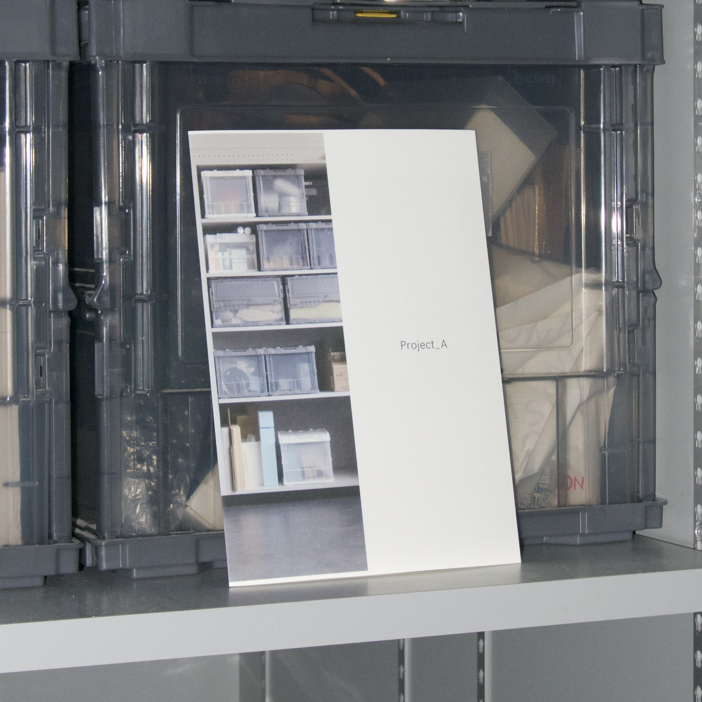
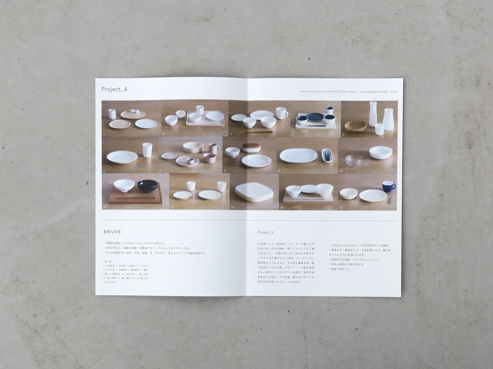
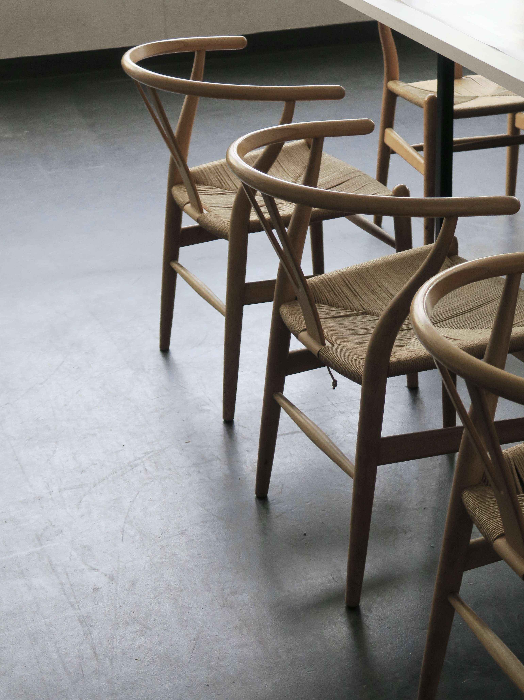
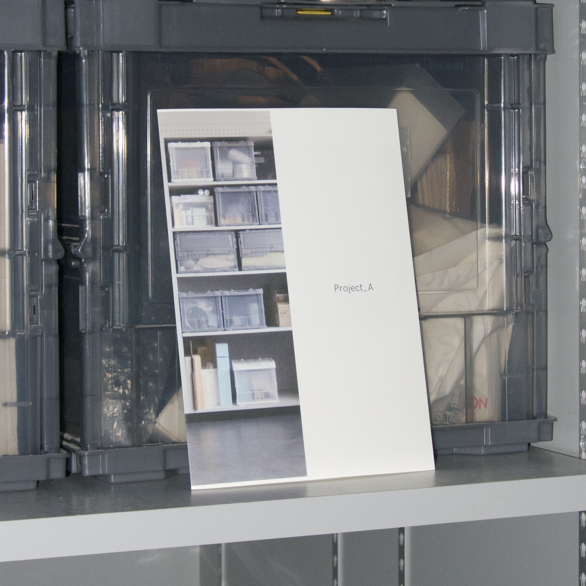
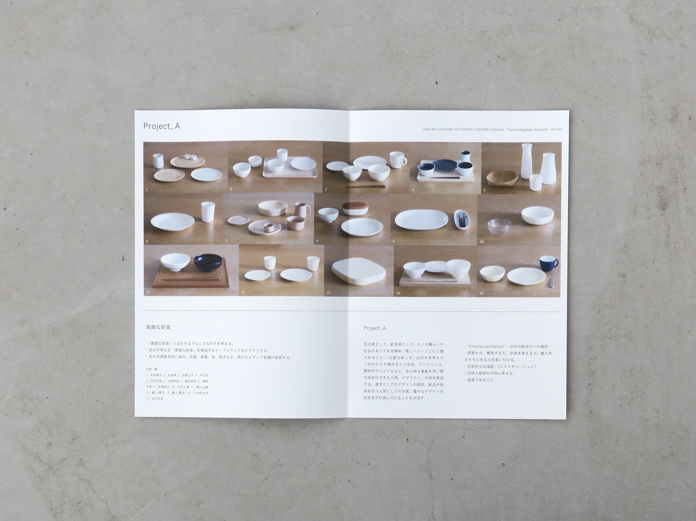
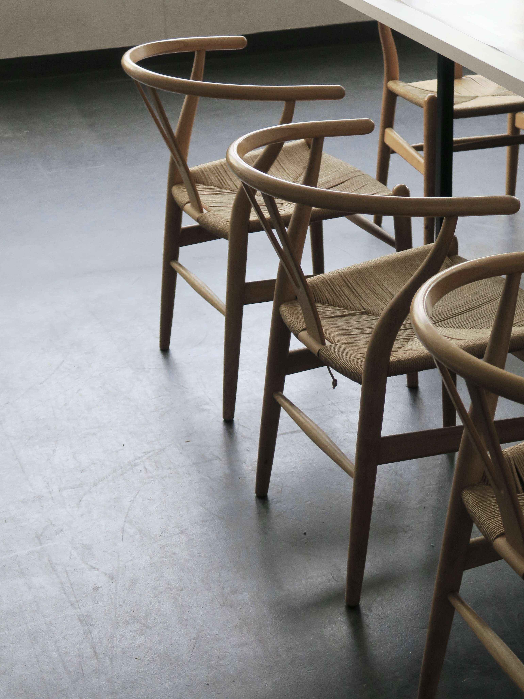

Project_A Handout
多摩美術大学統合デザイン学科長崎綱雄プロジェクトオープンキャンパスハンドアウトのデザイン。素敵な朝食をテーマにデザインしたテーブルウェアをまとめました。制作環境をそのままビジュアルにしている。表紙は2種類、Yチェアとコンテナボックス。
[Graphic Design]
AD,D,P : Nozomi Terashima
CL: INTEGRATED DESIGN
2024
 




